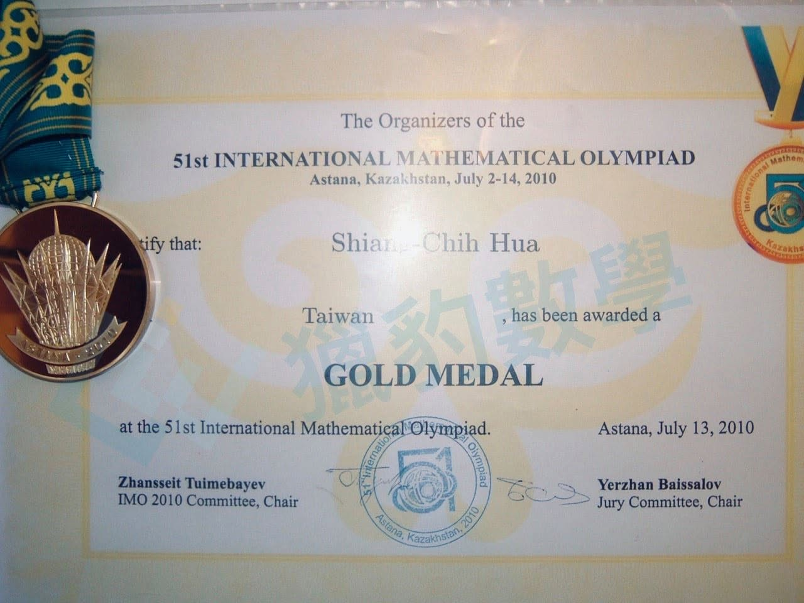
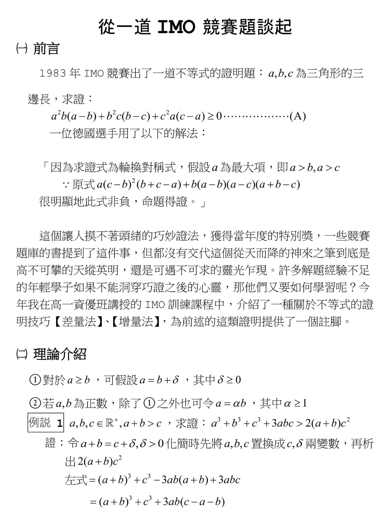
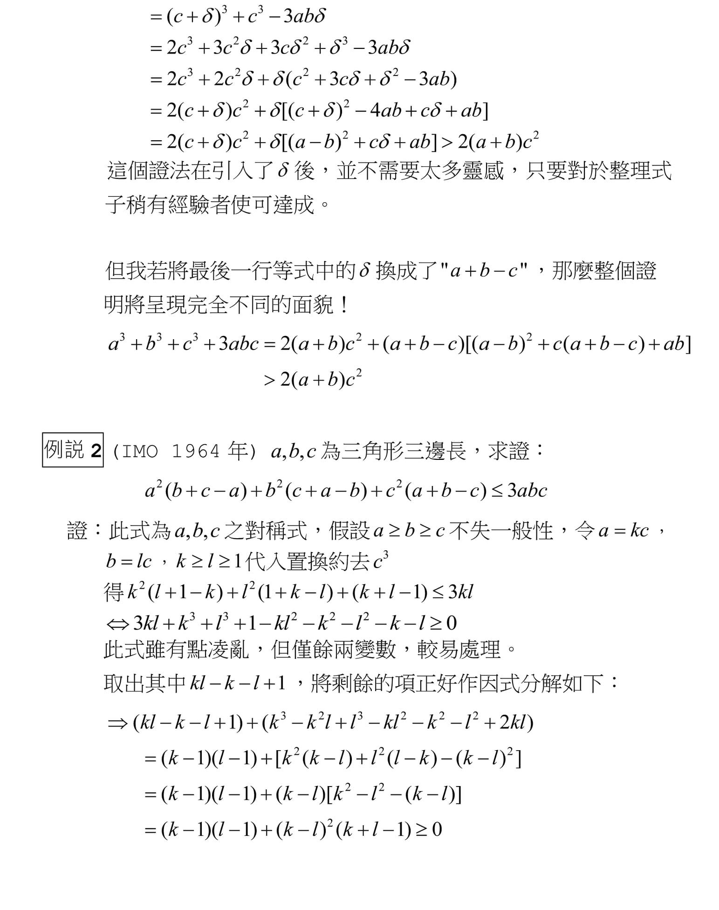
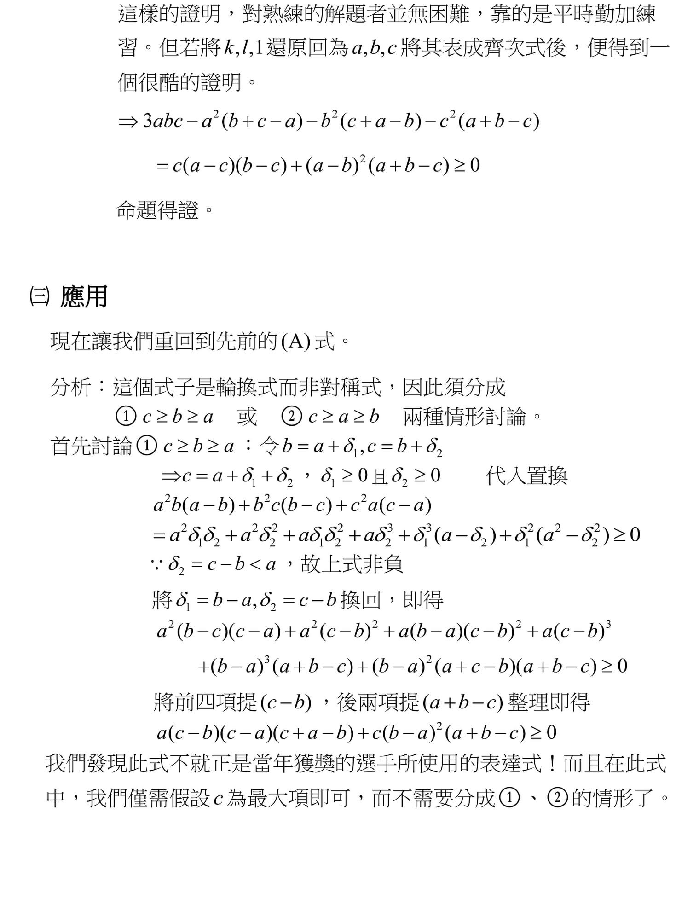
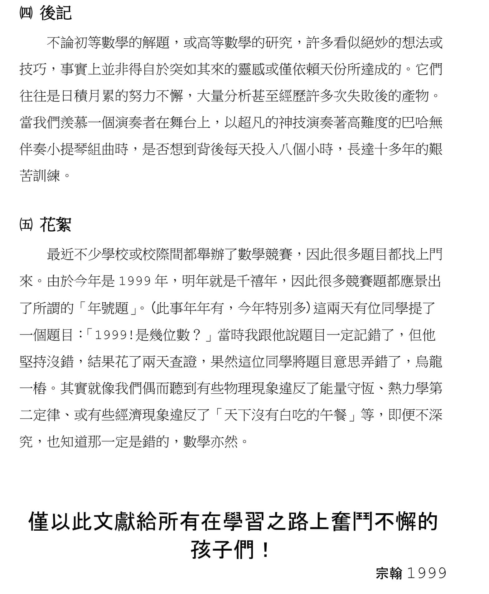

關於星初窺IMO的一些事
記得第一次帶著星去找宗翰老師的時候,一見面就傻呼呼地拿著高中競賽的題目去請教他,當時星才四年級，因為星已在清大數培上課,接觸了一些高中競賽題...老師有些錯愕,覺得我似乎是誤會了什麼,我花了點時間跟老師說明,他聽完沒說什麼，但或許怕我不明白IMO是條漫長而艱苦的路，事後傳我這篇他在1999年寫給學生的文。

他也請華祥志老師（老師以前的學生 2010，2011 兩屆IMO金牌）給星指導了幾堂課，讓星一窺IMO的世界。
經宗翰老師首肯 也和大家分享這篇文…
大家別忘了今晚準時收看宗翰老師 關於「輕競賽」的示範教學喔！
https://www.facebook.com/groups/695697124716309/permalink/709403040012384/



